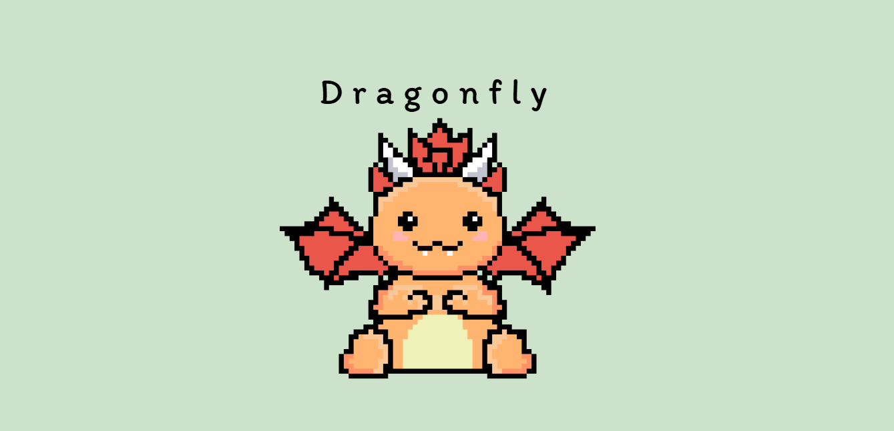

01 / HACKATHON
Dragonfly
A small desktop game I built with my sister during my first hackathon. We wanted to create a cute, relaxing game that people could open whenever they needed a quick break.
Electron
JavaScript
HTML
CSS
What I learned: Working under a tight deadline, collaborating on a project, and turning an idea into a working application.
View on GitHub →Design & coding process